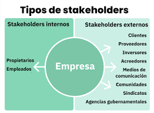

Identifica a los interesados de un proyecto y comprende la diferencia entre lo que el sistema debe hacer y cómo debe hacerlo.
Un stakeholder (interesado) es cualquier persona, grupo u organización que puede afectar o ser afectado por un proyecto.
Pertenecen a la organización que desarrolla el proyecto.
Son personas u organizaciones externas afectadas por el proyecto.

Los primarios usan el sistema; los secundarios tienen interés indirecto.
Explica qué debe hacer el sistema.
"El sistema debe permitir al usuario registrarse."
Explica cómo debe funcionar el sistema.
"El sistema debe responder en menos de 2 segundos."
| RFN | ¿Qué es? | Ejemplo |
|---|---|---|
| Rendimiento | La velocidad del sistema. | La app debe cargar en 2 segundos. |
| Seguridad | Protección de los datos. | Las contraseñas deben estar encriptadas. |
| Usabilidad | Facilidad de uso. | Comprar en menos de 3 clics. |
| Accesibilidad | Uso por personas con discapacidad. | Compatible con lectores de pantalla. |
| Disponibilidad | Tiempo que el sistema está disponible. | 99.9 % de disponibilidad. |
| Escalabilidad | Capacidad de soportar más usuarios. | Atender miles de usuarios al mismo tiempo. |
| Mantenibilidad | Facilidad para corregir errores. | Resolver fallos en menos de 4 horas. |
| Portabilidad | Funcionar en varios dispositivos. | Compatible con PC y celulares. |
| Compatibilidad | Integrarse con otros sistemas. | Conectarse con una pasarela de pagos. |
| Confiabilidad | Funcionar correctamente sin errores. | No perder datos en un apagón. |
| Restricciones tecnológicas | Tecnologías obligatorias del proyecto. | Usar Node.js y React. |